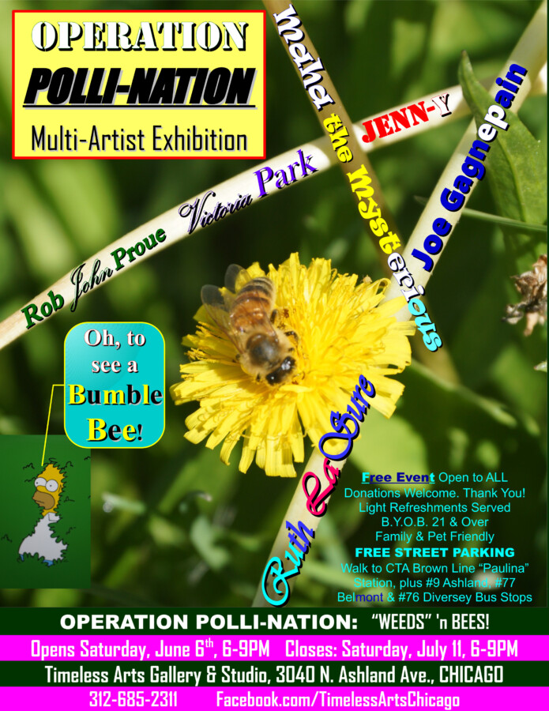

OPERATION Polli-Nation : Sparing “WEEDS” ‘n Bees | OPENING RECEPTION 6/6/26
Every Spring it seems the first thing on every homeowner’s mind is to WIPE OUT Dandelions, the Bumble Bee’s very first REAL MEAL after a long, dark, cold Winter’s nap.
Don’t do it. Save the “weeds” and we save the bees.
Our June Multi-Artist Exhibition, OPERATION: Polli-Nation features original works by Victoria Park, Ruth LaSure, JENN-Y, Maha the Mysterious, Joe “Art by Joe” Gagnepain, and Timeless Arts Gallery owner, Rob John Proue.
You’ll see paintings, photography, wire sculpture, metal sculpture, jewelry, and more.
Free Stickers for everyone! 🙂
Opening Reception: Saturday, June 6, 6-9PM
Closing Reception, Saturday, July 11, 6-9PM
All are welcome @TimelessArtsChicago. B.Y.O.B. is O.K.A.Y. if you are 21 & over.